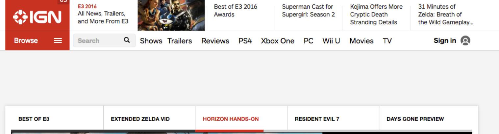

Designing an app
Jake LaCombe
Your Situation
So you have an app idea, but need a design
Your coders can't design anything (doesn't expect them too), so it's up to you!
Give it a whirl!
This can't be hard
- Yourself 3 hours ago
Why and I so terrible?
Design is not in the blood as most people think
Being a good designer involves knowing the fundamentals of design.
Coders have standards, and design is the exact same way.
So what is Design?
Terminology
Design is essentially a communication tool for your audience.
You are wanting to tell them something, have them interact with something, and get them to the correct information or workflows.
That means design is not independent
What this means is that design never stands alone. Your product needs to have an objective or purpose.
You can't get a design down unless you know your subject.
Content is King!
- All Professional Designers, if asked at any point in time.
First Step!
Get your content down
The first think you need to do get your main focus down
After that, make a list of every feature you want your app to have
You don't have to be perfect
This is your brainstorming phase
Don't think about priority or feasibility at this moment. We will get to that part later.
Example
I want to make an application that displays neighborhood data on a mapped display.
- I want to see all the crimes against society.
- I want to see all the crimes against property.
- I want to see properties that are legally abandoned.
- I want to filter a neighborhoods addresses by their tax delinquency status.
- I want to see all the dangerous buildings in a neighborhood.
- I want to see all the problem renters in a neighborhood.
- I want to see the demographics information in a neighborhood.
Information Architecture
Let's look at a normal dinner plate.
You have three sections on a typical dinner plate:
- 1 Meat or Protein Item
- 1 Grain
- Section of Fruits & Veggies
I know there are exceptions such as chicken stir fry where all is masked together, but that's the keyword (exceptions)
Why the Separation?
Humans can only digest so much at one time
Putting everything scrambled on the page illogically will drop your user retention rate.
How this applies to you
Now that you have your feature list, you need to group the features together in a way that makes sense for your user base.
This will essentially form what is known as the Information Architecture of your application - Logical grouping of features
This will greatly assist with navigation.
How to implement it.
- Write every feature on a flash card.
- Group features that belong together, or sound like they belong together.
- Once you have enough cards, give your group a one or two word name. If your have a name longer than this, your group is too broad.
- Keep repeating until all of your cards are grouped.
- For any ungroupable cards, reevaluate that feature to see if it fits in your app.
Example: Let's go back to the Neighborhood App.
- I want to see all the crimes against society.
- I want to see all the crimes against property.
- I want to filter a neighborhoods addresses by their tax delinquency status.
- I want to see all the dangerous buildings in a neighborhood as a vacant indicator.
- I want to see all the problem renters in a neighborhood as a vacant indicator
- I want to see the demographics information in a neighborhood.
Crime
- I want to see all the crimes against society.
- I want to see all the crimes against property.
Legally Abandoned.
- I want to see properties that are legally abandoned.
Vacant Indication.
- I want to see all the dangerous buildings in a neighborhood as a vacant indicator.
- I want to see all the problem renters in a neighborhood as a vacant indicator
Census
- I want to see the demographics information in a neighborhood.
Time for Design Principles!
It's a load of crap!
I mean, it seriously is.
- Jake LaCombe, said while students wait for punchline on Sept 23, 2017.
Let's move on!
Let's do Proximity first. It's the easiest.
Proximity
Proximity Defined
If things are alike, they should be grouped together.
Examples
Purpose
Users will associated stuff together as being related.
Scattering items like nav all over the place makes it difficult to find what you need.
Likewise, stuff combined confuses the user as to what will occur.
The Bad
The Bad Fixed
Simple Bad
- Math CD’s
- Algebra
- English
- Shakespeare
- Theory of Evolution
- Solar System
Simple Bad Fixed
-
Math
- Math CD’s
- Algebra
-
Language Arts
- English
- Shakespeare
-
Science
- Theory of Evolution
- Solar System
Alignment
Alignment Defined
Elements should be properly positioned. Things should not be arbritrarily placed on a page.
The fox is big
The fox jumped over the hole.
T h e t u r t l e sprinted to the river
Then
the
hare
ran back to it’s cabbage in the woods
The fox is big The fox jumped over the hole. The turtle sprinted to the River Then the hare ran back to it’s cabbage in the woods
More Good!
...And some bad
Repetition
- Item 1
- Item 2
- Item 3
Repetition Defined
Once you defined how something works, reuse it.

Contrast
Contrast Defined
If things are different, show it. Let the user know.
Contrast Examples
Contrast by Fonts
Contrast by White Space
Subtitle of Post
First Paragraph
Second Paragraph of text.
Contrast by Color
Hierarchy Time
Hierarchy Objective
Now that you know the content of your sections, you need to outline the flow of the page so that the most important content is emphasized the most.
Rules of CRAP apply here, even though we do not have a visual display
Crime Section Outline
Let's look at how we would create an outline for the Crime Page
Layouts
Laying out the page
Now that you have outlined your content, it's time to arrange it in a way that enhances your hierarchy.
Gridding is a great way to do this.
Best way to start
To get good at gridding, I recommend starting with established rations.
Typography
Guidelines
Font is something that you can stick with and be safe, or go for something big and do something dangerous with it.
Font won't make the largest different in your site unless you make real bad decisions.
Serif Font
San Serif Font
Typography Techniques
Bold, Italics, and Underline are ways to emphasize text in your app
Note that Italics can be hard to see, as well as bold for various fonts and screen resolutions
Font By Size
Good Contrast
Just by resizing fonts!
To accomplish this, find a good base height (12px), and multiply it by 1.5 for every header you are looking to have.
Ex: 12px body text, 18px sub header, and 27px for larger headers.
Color
Purpose
Colors have different purposes, so it's more than just a matter of personal preferences.
In addition to these basic principles, different countries and cultures have established meaning.
Recommendation
Start with a base color. After you have established that, look online for color schemes related to that.
If that doesn't work for you, I recommend going to Adobe Color.
Finally, black and white are good neutral colors that work everywhere!
Caveats
The W3C has recommendations for making your site accessible in terms of different between background and foreground color
Make sure that the colors you choose work well with the W3C color differences. Several online checkers can assist with this.
Where to go from here
Remember the 4 principles of Design
- Contrast
- Repetition
- Alignment
- Proximity